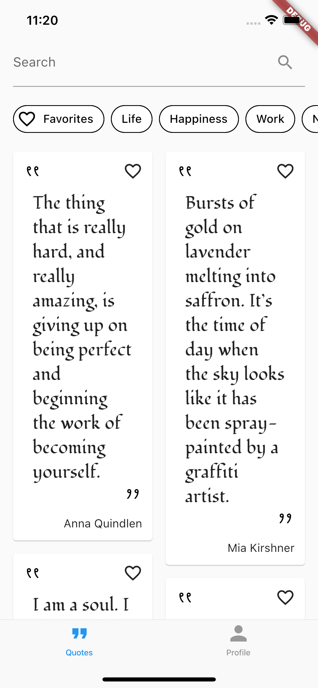

10 Dynamic Theming & Dark Mode¶
When thinking about mobile apps — or even apps in general — dark mode might instantly cross your mind. It’s one of the most expected features for every new app developed. However, it’s hard to imagine supporting either dark or light mode without using some type of theming. For a beginner who’s just started the journey of developing mobile apps, it’s usually most intuitive to specify colors and styles on the fly when they’re needed. After gaining some experience developing apps, however, you’ll quickly realize that this approach is unsustainable and hard to maintain. Imagine switching a specific color in the app for a darker shade — you’d have to go through all the appearances of the color previously used and switch it to the new one. This is where theming saves the day!
Theming in Flutter apps allows you to share colors and styles throughout whole or specific parts of the app. You can set up the theme in your Flutter app in a few ways. You’ll look at different methods of setting up the theme in just a moment.
The way you’ll choose to create a theme in most cases relies heavily on the InheritedWidget class. Therefore, check the key concepts and theory behind InheritedWidget in the previous chapter, Chapter 9, “Internationalizing & Localizing”. In this chapter, you’ll:
- Take a quick look at different approaches to setting up a theme in your Flutter app.
- Use your knowledge on
InheritedWidgetto add dynamic theming to your app. - Learn about best practices and how to define colors and styles for the theme.
- Learn how to implement dynamic theming based on user preferences.
Throughout this chapter, you’ll work on the starter project from this chapter’s assetsfolder.
It’s time to get started by looking at different ways to theme your app.
Ways to Theme Your App¶
As already mentioned, you have numerous ways to set up the theme for your project. For this chapter, you’ll only look at a few ways with a bit more focus on the one that’s the most appropriate for the WonderWords app.
The purpose of this chapter is to provide you with options so that when you’re facing different feature requirements and app architectures, you can choose the option that works the best for your case. Since there isn’t much sense in using multiple theming solutions for your app, this chapter is more theoretical. You’ll use only one theming solution for WonderWords and then look at examples of other options.
Basic App Theming¶
Look at the following code snippet:
@override
Widget build(BuildContext context) {
return MaterialApp(
title: 'Flutter Demo',
theme: ThemeData(
primarySwatch: Colors.blue,
),
home: const MyHomePage(title: 'Flutter Demo Home Page'),
);
}
Note: Notice that the code in this section isn’t part of the WonderWords app. Therefore, you won’t find it in the materials. It’s here only for demonstrational purposes and doesn’t require any action on your part.
The code above should look very familiar — it’s the initial code generated when you run the flutter create {app_name} command. You can see it contains a very primitive theme.
From its initial releases, Flutter supported light and dark themes. It allows you to define the theme data for the app one time — like fonts, shapes and colors — then use that theme throughout the app.
In the following example, you see how to define those in the theme:
theme: ThemeData(
// 1
primaryColor: Colors.blueGrey,
// 2
fontFamily: 'Georgia',
// 3
textTheme: const TextTheme(
headline1: TextStyle(
color: Colors.black,
fontSize: 36.0,
fontWeight: FontWeight.bold,
),
),
),
In the example above, you can see how to define:
- The color in the theme.
- The font family for your project. Note that the usage of custom fonts might be a bit more complicated than just adding the font’s name to the theme — Flutter has a limited number of fonts supported by default. Sometimes, you might have to add a specific font as an asset to the project or use a third-party package such as google_fonts to use a custom font. In the case of Georgia, no special steps are required.
- A custom text theme. In this case, the theme for only one text style was defined by providing a color, font size and font weight.
Note: When defining the theme in the way shown above, things can get messy very quickly. Therefore, a good practice is isolating the code in a separate file or even creating a custom class for it.
Now, as you know how to define the theme for your app, look at how you’ll use the defined theme in your UI:
Text(
'Title',
style: Theme.of(context).textTheme.headline1,
),
In the example above, you use the style defined in your theme for a Text widget.
Similar to a light theme, you can also define a dark theme. Use the ThemeData widget on the darkTheme attribute of MaterialApp to define a dark theme:
theme: ThemeData(
// definition of light theme
),
darkTheme: ThemeData(
// definition of dark theme
),
Now, you might be wondering how the app will know which theme to use if you define both themes. The themeMode attribute of MaterialApp has you covered:
themeMode: ThemeMode.light,
The line of code above activates light mode for the app. By applying ThemeMode.dark, the app uses dark mode. If you don’t define it, the app uses ThemeMode.system, which sets the mode based on the phone’s settings.
This way of defining the theme might be enough in some cases, but it has a fairly noticeable downside. It limits you to only using the predefined parameters of the theme as well as not providing you with a good out-of-the-box solution to let your users change the theme mode when they’d like to.
Using a Third-party Package¶
Thanks to the very strong developer community, quite a few excellent third-party solutions exist to handle theming for your Flutter app. The various packages might be more or less appropriate for your use case. One such package is adaptive_theme, which is fairly popular in the developer community. It represents a holistic theming solution for your app by covering all the important features connected to theming. In the following section, you’ll dive deeper into the usage of this package.
Note: The following code examples are only for demonstration purposes. Therefore, you’re not required to adjust any code in the starter project materials, and it won’t be accessible in the final project.
Similar to all packages, the first thing you need to do is add it to your project. You can achieve that by running the flutter pub add adaptive_theme command or by adding the following line in the pubspec.yaml file under dependencies:
adaptive_theme: ^3.1.0
Because this book focuses on the package-based architecture of the app — to refresh your memory on that, review Chapter 1, “Setting up Your Environment” — you have to take into consideration choosing the right package to add this package. Best practice is to specify the theme of the app in the component_library package, as you’ll need to access the theme in other packages.
Take a look at the basic usage of the package:
@override
Widget build(BuildContext context) {
// 1
return AdaptiveTheme(
// 2
light: ThemeData(
// implementation of light theme
),
dark: ThemeData(
// implementation of light theme
),
// 3
initial: AdaptiveThemeMode.light,
// 4
builder: (theme, darkTheme) => MaterialApp(
title: 'Flutter Demo',
// 5
theme: theme,
darkTheme: darkTheme,
home: const MyHomePage(title: 'Flutter Demo Home Page'),
),
);
}
Look carefully, and you’ll notice quite a few similarities with the implementation of the theme in the previous section. This is what’s going on in the code above:
- With the help of the
AdaptiveThemewidget, handle app theming. - Use
ThemeDatato define both dark and light themes. - Define the theme initially used for the app. In the example above, the app will use a light theme.
- Use
builderto addMaterialAppto the widget tree. - Apply light and dark themes defined above in the
AdaptiveThemewidget toMaterialApp.
The code above does basically the same as the final example of the previous section. Next, look at how to change the theme mode:
// 1
AdaptiveTheme.of(context).setDark();
// 2
AdaptiveTheme.of(context).setLight();
// 3
AdaptiveTheme.of(context).setSystem();
Using the code above:
- Changes the theme to dark mode.
- Sets the theme to the light mode.
- Changes the theme according to the system settings of the users’ devices.
This feature of the package can come in handy when implementing the app’s settings. But it would be a bit impractical if the user changes the theme mode in the settings, then when opening the app next time, the theme reverts to light mode. Fortunately, this package also has you covered in this situation:
void main() async {
WidgetsFlutterBinding.ensureInitialized();
final themeMode = await AdaptiveTheme.getThemeMode();
runApp(MyApp(themeMode: themeMode));
}
Calling AdaptiveTheme.getThemeMode() in main() lets you access the last theme set in the app. By providing it as a parameter to the MyApp widget, you can set this mode as the initial mode as follows:
initial: themeMode ?? AdaptiveThemeMode.light,
Notice that AdaptiveTheme.getThemeMode() can return a null value in cases where the theme mode has never been set. Therefore, you have to add a fallback mode, which in the case above, is light mode.
The adaptive_theme offers plenty of cool features — it’s worthwhile to go through its official documentation. Before continuing with the next section, one more thing is worth mentioning.
In some situations, you might want to fetch the theme from a remote source. This could be a case when you want to change the app appearance without actually rolling out a new version. This is quite common when developing B2B (business to business) apps. The businesses, which in this case are your clients, will provide their clients with your app but still want to distinguish themselves from other clients. Therefore, the app’s themes will be defined somewhere remotely. Each business will use its theme configuration, so the same app will look different for different businesses. With the help of the adaptive_theme package, you can achieve this by using the following code snippet:
AdaptiveTheme.of(context).setTheme(
light: ThemeData(
// new specification of light theme
),
dark: ThemeData(
// new specification of dark theme
),
);
This code replaces the light and dark themes defined before. Notice that this will replace the initially defined themes only while the app is running. By diving deeper into this issue, you can save the new theme to local storage and access it without fetching the theme from a remote source every time the app restarts.
Although this option gives you a good out-of-the-box solution for switching between light and dark themes, it still limits you to predefined parameters for your themes.
Using Inherited Widget for Theming¶
Finally, it’s time to implement dynamic theming for your WonderWords app. As mentioned in the introduction, it will depend on InheritedWidget. As theming is an essential part of the app’s architecture, quite a few things are already prepared for you.
WonderTheme as InheritedWidget¶
You’ll start by opening wonder_theme.dart located in packages/component_library/lib/src/theme:

Look at the implementation of the WonderTheme class:
class WonderTheme extends InheritedWidget {
const WonderTheme({
required Widget child,
required this.lightTheme,
required this.darkTheme,
Key? key,
}) : super(
key: key,
child: child,
);
final WonderThemeData lightTheme;
final WonderThemeData darkTheme;
// TODO: replace with correct implementation of updateShouldNotify
@override
bool updateShouldNotify(WonderTheme oldWidget) {
return false;
}
// TODO: replace with correct implementation of service locator function
static WonderThemeData of(BuildContext context) {
return LightWonderThemeData();
}
}
There’s nothing very special about the code above. WonderTheme takes light and dark themes of the WonderThemeData type as an attribute — which you’ll learn about in a few moments — as well as a child, which allows you to properly position in the widget tree.
A definition of the of() method plays the role of a service locator, which lets you access theme data in your UI. As the WonderTheme class extends InheritedWidget, you have to implement one required override: updateShouldNotify(). You’ll start by fixing the implementation of this override. Start by replacing the current implementation of the override of updateShouldNotify(), which is under // TODO: replace with the correct implementation of updateShouldNotify, with the following code:
@override
bool updateShouldNotify(WonderTheme oldWidget) =>
oldWidget.lightTheme != lightTheme || oldWidget.darkTheme != darkTheme;
updateShouldNotify() notifies all the widgets that inherit WonderTheme so they can be rebuilt, and therefore, they’ll reflect the change. It notifies them exclusively when the dark or light theme of an old widget is different from the current widget. This prevents unnecessary rebuilds.
Next, you’ll add a correct implementation of the of() method. Replace the current implementation under // TODO: replace with correct implementation of service locator function with the following code:
static WonderThemeData of(BuildContext context) {
// 1
final WonderTheme? inheritedTheme =
context.dependOnInheritedWidgetOfExactType<WonderTheme>();
// 2
assert(inheritedTheme != null, 'No WonderTheme found in context');
// 3
final currentBrightness = Theme.of(context).brightness;
// 4
return currentBrightness == Brightness.dark
? inheritedTheme!.darkTheme
: inheritedTheme!.lightTheme;
}
The code above:
- Obtains the nearest widget in the widget tree of the
WonderThemetype and stores it in the variable. - If no widget of the
WonderThemetype is in the widget tree, it interrupts the normal execution of the code. This is important during the development process, so you don’t forget to add yourInheritedWidgetin the widget tree. In just a moment, you’ll see what happens if you forget to addWonderThemeat the top of your widget tree. - Stores the current brightness in the variable.
- Based on current brightness, returns either a light or dark theme.
As already mentioned, you’ll now see what happens if you forget to add WonderThemeto the widget tree. Open main.dart located in the lib folder at the root of the project. Locate // TODO: replace build() method for demonstration purposes, and replace the implementation of build() with the following:
// TODO: remove changes after testing
@override
Widget build(BuildContext context) {
return MaterialApp.router(
theme: ThemeData(),
darkTheme: ThemeData(),
themeMode: ThemeMode.light,
supportedLocales: const [
Locale('en', ''),
Locale('pt', 'BR'),
],
localizationsDelegates: const [
GlobalCupertinoLocalizations.delegate,
GlobalMaterialLocalizations.delegate,
AppLocalizations.delegate,
ComponentLibraryLocalizations.delegate,
ProfileMenuLocalizations.delegate,
QuoteListLocalizations.delegate,
SignInLocalizations.delegate,
ForgotMyPasswordLocalizations.delegate,
SignUpLocalizations.delegate, UpdateProfileLocalizations.delegate,
],
routerDelegate: _routerDelegate,
routeInformationParser: const RoutemasterParser(),
);
}
Compare your code with the implementation you had before. You’ll see the only thing that’s changed is that the widget tree doesn’t contain the WonderTheme widget anymore. Run the app to see the changes:
Note: If you’re having trouble running the app, you might have forgotten to propagate the configurations you did in the first chapter’s starter project to the following chapters’ materials. If that’s the case, please revisit Chapter 1, “Setting up Your Environment”.
As explained before, the fact that you didn’t add WonderTheme to the widget tree causes the issue. This is important because you’re trying to access it with the help of the of() method in multiple places in the UI to reflect the theme specification you defined.
Remove the changes you just did in main.dart, and hot refresh the app. This is what you’ll see:

Defining Custom Theme Data¶
In wonder_theme_data.dart, under the themes folder, you’ll see an abstract class and its two implementations: LightWonderThemeData and DarkWonderThemeData. Quite a few things are already prepared for you. WonderThemeData has declarations of the theming elements, such as colors and fonts, but there are two different implementations of this class with different values assigned to those declarations. You’ll override these declarations in the implementation classes.
In the same file, you’ll find the ThemeData type getter in the WonderThemeData class:
ThemeData get materialThemeData;
materialThemeData will assign themes to the MaterialApp widget. The data from materialThemeData differs for both light and dark themes, so you’ll implement it in the implementation classes. Locate // TODO: Add light theme implementation for materialThemeData under the LightWonderThemeData class. Notice that an override for the materialThemeData getter already exists, which is implemented under the comment. This is because, without correct overrides, the WonderThemeData class will cause issues that prevent you from running the app. Proceed by replacing the current implementation with a new one:
@override
ThemeData get materialThemeData => ThemeData(
// 1
brightness: Brightness.light,
// 2
primarySwatch: Colors.black.toMaterialColor(),
// 3
dividerTheme: _dividerThemeData,
);
Before explaining the code, you’ll do the same with the implementation of materialThemeData located in the DarkWonderThemeData class under // TODO: Add dark theme implementation for materialThemeData:
@override
ThemeData get materialThemeData => ThemeData(
// 1
brightness: Brightness.dark,
// 2
primarySwatch: Colors.white.toMaterialColor(),
// 3
dividerTheme: _dividerThemeData,
// 4
toggleableActiveColor: Colors.white,
);
Here’s what these code snippets do:
Brightness‘slightanddarkvalues set the theme for all the elements inThemeData. This assignment initializes theThemeDataelements with the default light or dark theme values. So, if you don’t specify elements likescaffoldBackgroundColorinThemeData, then the app uses the default ones from the Flutter framework.- The light theme and dark theme implementations of
materialThemeDataassignblackandwhitecolors as the primary swatches. - This is the theme for the divider, which is the same for both light and dark themes. Therefore, you use a global variable to define it.
- An additional color for active toggle is defined for the dark theme, as it doesn’t use color from
primarySwatch.
Note:
primarySwatchis the driving factor for all the primary colors in the app. For example, all the text in the app gets the colors from this swatch.toMaterialColoris an extension method in wonder_theme_data.dart that generates the swatch from any color. Feel free to look at the implementation of this extension.
Setting up Colors¶
Similar to materialThemeData, other WonderThemeData attributes are also defined. One, for example, is colors. Notice the multiple Color getters in the WonderThemeData abstract class. You use these to declare all the various sets of colors you use in the app. Look at the example that’s already been prepared for you. The color is declared in the WonderThemeData abstract class as follows:
// 1
Color get roundedChoiceChipBackgroundColor;
The values for a light mode are assigned in the LightWonderThemeData class:
// 2
@override
Color get roundedChoiceChipBackgroundColor => Colors.white;
And values for dark mode are assigned in the DarkWonderThemeData class:
// 3
@override
Color get roundedChoiceChipBackgroundColor => Colors.black;
Here’s what the code snippets above mean:
- This is the declaration for a background color for the rounded choice chip.
- Assigns the
whitecolor to rounded choice chip background for the light theme. - Assigns the
blackcolor to rounded choice chip background for the dark theme.
As you haven’t implemented the systematic of switching themes, take a look at the following image of how the code above affects the app’s appearance. You’ll be able to test it on your own in just a moment:
Now, you’ll see how to use this data in an InheritedWidget.
Switching Themes¶
You’ve already learned about switching themes in both of the previously mentioned theming approaches. When doing it with the help of an inherited widget, it’s not much different.
Switching themes is as easy as providing a ThemeMode to MaterialApp. However, MaterialApp has to be aware of both the light and dark implementations of materialThemeData you defined in one of the previous sections.
Open the root main.dart, and replace the code under // TODO: provide MaterialApp with correct theme data with the following:
// TODO: wrap with stream builder
// 1
return WonderTheme(
lightTheme: _lightTheme,
darkTheme: _darkTheme,
// 2
child: MaterialApp.router(
theme: _lightTheme.materialThemeData,
darkTheme: _darkTheme.materialThemeData,
// TODO: change to dark mode
themeMode: ThemeMode.light,
supportedLocales: const [
Locale('en', ''),
Locale('pt', 'BR'),
],
localizationsDelegates: const [
GlobalCupertinoLocalizations.delegate,
GlobalMaterialLocalizations.delegate,
AppLocalizations.delegate,
ComponentLibraryLocalizations.delegate,
ProfileMenuLocalizations.delegate,
QuoteListLocalizations.delegate,
SignInLocalizations.delegate,
ForgotMyPasswordLocalizations.delegate,
SignUpLocalizations.delegate,
UpdateProfileLocalizations.delegate,
],
routerDelegate: _routerDelegate,
routeInformationParser: const RoutemasterParser(),
),
);
Here’s what this code does:
- Initializes
WonderThemewith the data from the two themes. MaterialApp.routeruses both light and darkmaterialThemeDatadefined as an attribute of your implementations ofWonderThemeData. With the help ofthemeMode, the UI reflects one theme or the other.
To see your progress so far, run the app. To test dark mode, replace // TODO: change to dark mode and the line of code after it with the following:
// TODO: change for dynamic theme changing
themeMode: ThemeMode.dark,
Hot restart the app, and this is how your app will look for light (left screen) and dark (right screen) modes:
Switching Themes With User Intervention¶
So far, you’ve manually switched themes by changing themeMode and rebuilding the app. That’s not ideal, as your users won’t rebuild the app once they install it. Instead, they want to select a light or dark theme according to their preference. Now, you’ll add this capability to WonderWords.
Different Theme Modes¶
Just as Flutter’s theme provides three different modes for theming, your app will also support three theme modes. They’re predefined for you as DarkModePreferenceenumeration in dark_mode_preference.dart located in the lib/src folder of the domain_models package:
- alwaysDark: The app will always use dark mode.
- alwaysLight: The app will always use light mode.
- useSystemSettings: The app will use the current system theme, which could be either light or dark.
Upserting and Retrieving Theme Mode¶
To set and use the currently set theme mode, you’ll use BehaviorSubject, which you learned about in Chapter 6, “Authenticating Users”. To refresh your memory on the topic, look back at that chapter.
Look at its declaration and initialization in user_repository.dart located in the lib/srcfolder of the user_repository package:
final BehaviorSubject<DarkModePreference> _darkModePreferenceSubject =
BehaviorSubject();
_darkModePreferenceSubject holds the value of the current theme mode and will provide you with Stream, which you’ll listen to. This will let you update the UI appearance accordingly to the changes in theme mode.
To enable setting the theme mode, replace // TODO: add logic for upserting theme mode with the following method:
// 1
await _localStorage.upsertDarkModePreference(
preference.toCacheModel(),
);
// 2
_darkModePreferenceSubject.add(preference);
This code:
- Saves the selected theme mode of type
DarkModePreferenceto the local storage. You won’t go into details on how to save theme mode to the local storage using Hive. To refresh your memory on this, review Chapter 2, “Mastering the Repository Pattern”. - Sets
_darkModePreferenceSubjectto the current theme mode.
Next, look at how to retrieve the currently saved theme from local storage. This function is already implemented for you, as it’s crucial for the proper function of the starter project. Look at the following code:
Stream<DarkModePreference> getDarkModePreference() async* {
// 1
if (!_darkModePreferenceSubject.hasValue) {
final storedPreference = await _localStorage.getDarkModePreference();
_darkModePreferenceSubject.add(
storedPreference?.toDomainModel() ??
DarkModePreference.useSystemSettings,
);
}
// 2
yield* _darkModePreferenceSubject.stream;
}
This is what the code above does:
- Initially, when
_darkModePreferenceSubjectis empty, the code fetches the theme mode from local storage and adds it to the subject. If no theme mode is stored in the local storage, the default preferenceDarkModePreference.useSystemSettingsis set, which indicates either light or dark mode based on the device’s settings, and goes into the subject. - Provides you with the
BehaviorSubject‘s stream, which you’ll listen to for the changes in the following steps.
Changing Theme Through UI¶
At this point, you can access the theme preference selection UI in the Profile Menu Screen by switching to the Profile tab from the home screen. There, you’ll notice a list of radio buttons specifying the three Dark Mode Preferences.

However, you may notice that none of them is selected, and tapping them doesn’t change the starter project’s theme yet. To fix this, you need to do the following two tasks:
- Assign the new theme to the app when pressing the radio button on the profile menu screen.
- Reflect the change of the theme mode preference in the UI.
You’ll start by fixing the first issue.
Start by opening dark_mode_preference_picker.dart located in packages/features/profile_menu/lib/src. Locate // TODO: add ProfileMenuDarkModePreferenceChanged triggering for dark mode, and replace it with the following code:
bloc.add(
const ProfileMenuDarkModePreferenceChanged(
DarkModePreference.alwaysDark,
),
);
Before explaining the code above, you’ll do the same two more times for light and system theme modes. Replace // TODO: add ProfileMenuDarkModePreferenceChanged triggering for light mode with the following code:
bloc.add(
const ProfileMenuDarkModePreferenceChanged(
DarkModePreference.alwaysLight,
),
);
And replace // TODO: add ProfileMenuDarkModePreferenceChanged triggering for system mode with the following code:
bloc.add(
const ProfileMenuDarkModePreferenceChanged(
DarkModePreference.useSystemSettings,
),
);
The code snippets above trigger ProfileMenuDarkModePreferenceChanged with the DarkModePreference the user selected. Notice the parameter change in these calls: alwaysDark, alwaysLight and useSystemSettings.
Build and run the app, and your profile screen will look the same as before you applied changes.
To fix the UI so it’ll show the currently selected appearance, replace the line under // TODO: set correct group value for each theme mode preference with the following line of code. You have to do so three times — one time for each preference:
groupValue: currentValue,
groupValue is the attribute that assigns the currently selected value. If the valueof any of these radio tiles matches the groupValue, that radio tile becomes active. If value isn’t the same as groupValue, the button is inactive. currentValue, in this case, reflects the currently selected theme mode preference, which is part of the ProfileMenuBloc state — you won’t go into details here, as you learned about that in Chapter 3, “Managing State With Cubits & the Bloc Library”.
Hot restart the app, and you’ll see the following change:
Now, you just need to take care of one more issue. If you change the theme mode preference to Always Dark, the app’s theme still doesn’t change to dark mode. To fix this, navigate to the root-level lib folder and open main.dart. Replace the entire content of build() under // TODO: wrap with stream builder with the following code:
// 1
return StreamBuilder<DarkModePreference>(
stream: _userRepository.getDarkModePreference(),
builder: (context, snapshot) {
// 2
final darkModePreference = snapshot.data;
return WonderTheme(
lightTheme: _lightTheme,
darkTheme: _darkTheme,
child: MaterialApp.router(
theme: _lightTheme.materialThemeData,
darkTheme: _darkTheme.materialThemeData,
// 3
themeMode: darkModePreference?.toThemeMode(),
supportedLocales: const [
Locale('en', ''),
Locale('pt', 'BR'),
],
localizationsDelegates: const [
GlobalCupertinoLocalizations.delegate,
GlobalMaterialLocalizations.delegate,
AppLocalizations.delegate,
ComponentLibraryLocalizations.delegate,
ProfileMenuLocalizations.delegate,
QuoteListLocalizations.delegate,
SignInLocalizations.delegate,
ForgotMyPasswordLocalizations.delegate,
SignUpLocalizations.delegate,
UpdateProfileLocalizations.delegate,
],
routerDelegate: _routerDelegate,
routeInformationParser: const RoutemasterParser(),
),
);
},
);
Here’s what the code above does:
- Uses the
StreamBuilderthat reads the stream of_darkModePreferenceSubjectfrom user_repository.dart. - The
builderrebuilds the widget on the arrival of a new value. Here, you’ll get the dark mode preference from thesnapshotto use in the child widgets. - Sets the
themeModeaccording to the user’s dark mode preference.toThemeMode()is an extension method that convertsDarkModePreferencetoThemeMode. It’s defined at the end of the main.dart file.
For one last time, build and run the app, and dynamic switching for the theme should work like a charm:
Key Points¶
- Flutter offers a built-in solution for theming your app.
- Many other third-party theming solutions might work well for your project.
- You can implement a custom theme with the help of
InheritedWidget. - Usually, you want to support three different theme modes: light, dark and system.
- To hold the current theme mode preference, use
BehaviorSubject. This provides you with a stream you can listen to for changes. - To provide a great user experience, save the current theme mode preference in the local storage with the help of the Hive package.
Where to Go From Here?¶
As already mentioned, it’s important to be aware that you always have multiple options to achieve a specific goal or functionality. As you gain more and more knowledge, and therefore, become more and more experienced in Flutter development, it’s important to consider this fact. Based on the requirements of your specific problem, you should use the solution that’ll work best for you. Therefore, this chapter offers you a few different options for dealing with theming in your Flutter app. In the case of WonderWords, theming with the help of InheritedWidget works best, as it offers the most adjustability. In some other scenario, this might be too complicated of a solution, and therefore, it would just waste your time to implement it.
Flutter theming has quite a few other approaches that haven’t been explained in this chapter, so feel free to dive deeper into the topic and explore other third-party solutions. You can also go through the WonderWords project and try to find instances of styles or colors that you can add to your theme.